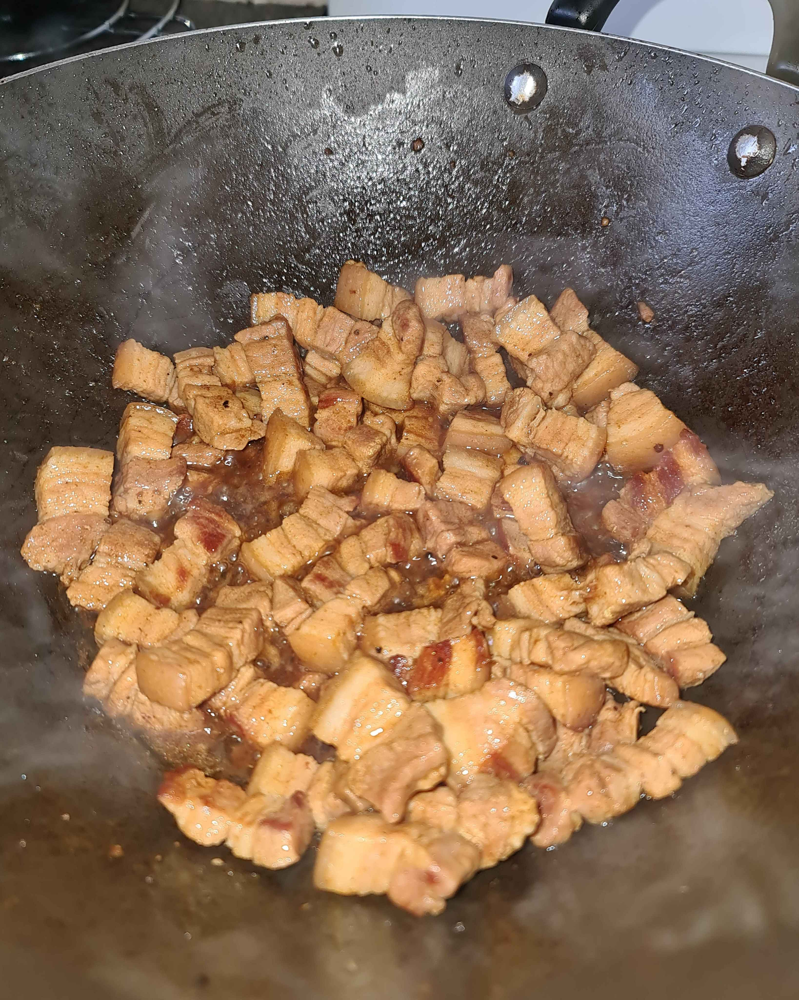
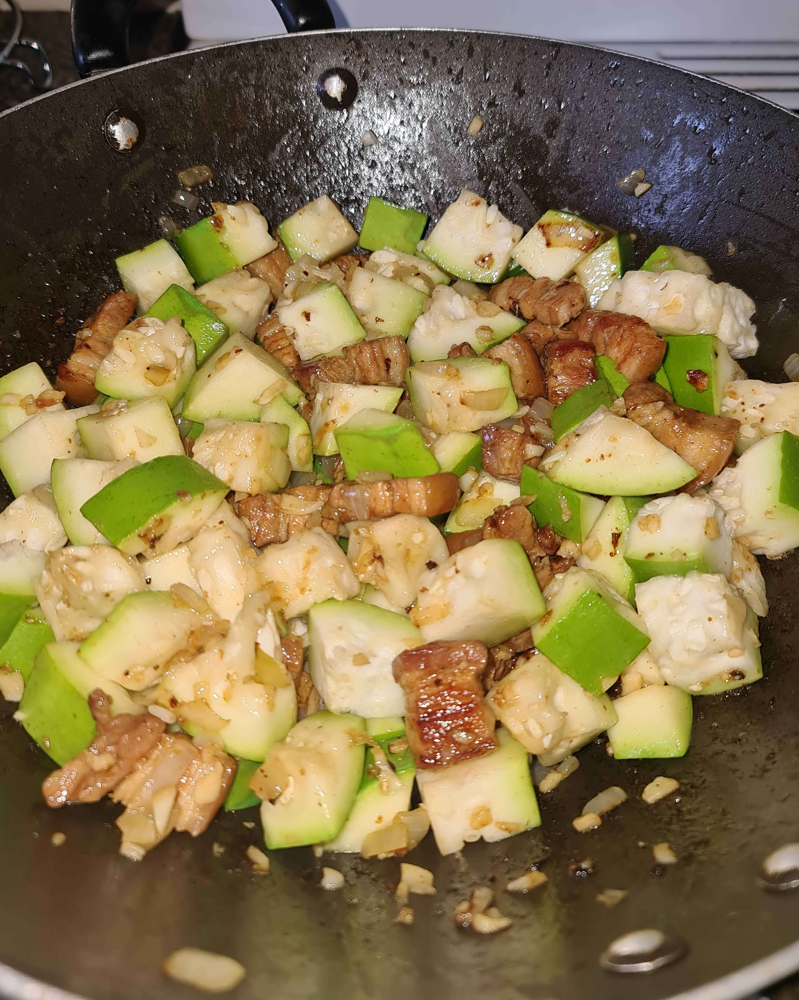

Ingredients
- Vegetable Oil
- Pork Belly
- Upo (Bottle Gourd), 1 large size
- Garlic, 4-6 cloves
- Onion, 2 medium size
- Water, 3-5 cups
- Salt, to taste
- Pepper, to taste
Recipe
- Roughly chop garlic, onions, upo and pork.
- Sear pork on 2 sides to brown.
- Add 1 cup of water to the pork, mix and cook to reduce.
- Repeatedly add cups of water and reduce until the pork is caramelised.
- Add the garlic and onions, mix thoroughly.
- Cook garlic and onions for at least 5 minutes.
- Add the upo, 1 cup of water, cover with a lid and cook until upo is to your liking.
- Serve hot with a bowl of white rice.
More Information
Pork Upo is a traditional filipino dish that is really easy to make, healthy and absolutely delicious. This dish is typically viewed as a 'poor' dish, which can be seen by the very little amount of ingredients that are necessary to cook, this also makes the dish very cheap which is great for large families or those on a budget (or both!).
The most difficult part of this dish is getting the pork cooked correctly, you're aiming for a caramelised sauce covering the pork. Take a look at the image example below to get an idea of what the pork should be like. Of course you should try to use feeling to get an idea of when to move onto the next step.
You can cook the pork for longer if you have a particularly tough cut of meat, just remember to keep adding water so your pork doesn't burn. Otherwise, this dish is very quick to make and is great is you have little time to cook after work or you meal prep for the week.
Ensure that the garlic and onions are cooked through before adding the upo as you don't want to bite into raw garlic when eating this dish.
If you made it this far I'd like to thank you for reading my recipe and my tips. If you'd like to see more from us you can explore the other blog posts I have.